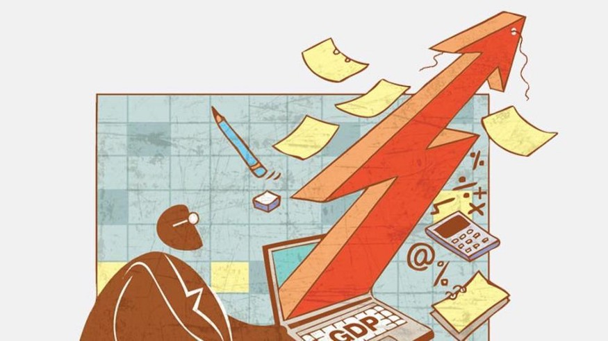

Economical article 4
Contents
Economical article 4#
How an individual can grow global GDP#
Publisher: Medium
Publishing Date: Jul 31, 2019

Image courtesy of the Hindustan Times.
{kind=link}
Let’s begin this post by playing a numbers game.
According to the latest IMF statistics, GDP per capita is US $ 5,420 and the real GDP annual growth rate is 4.4% in the developing world. Now let’s imagine your annual contribution to GDP is US $2,400.
What are some practical ways for someone to start a business that can grow GDP contribution in revenue to above average? Find out how!
First things first, it can be very easy for a struggling individual to imagine that there’s no way out of their situation and that they are doomed to stay in that situation. With such an income, getting credit is expensive and savings are almost non-existent. Therefore, those who follow this path have to be firm in maintaining a positive attitude and viewing challenges as opportunities for future growth.
Next, acquire financial literacy to make low income work hard. One could:
Sign up for financial literacy classes in their local neighbourhood
Look out for low capital investments and side hustles that they can participate in e.g. renting space, buying fractional shares and bonds and selling baked goods to small shops
Vow to pay their future self first in the form of savings e.g. having automatic deductions into a saving account, keeping a fraction of your pay with your employer and joining a local cooperative or small group (known locally in Kenya as a ‘chama’)
Seek opportunities to pool funds and spend less e.g. buying food in bulk and cost sharing, motorbike-pooling (i.e sharing a motorcycle) and finding roommates to share the rent
Avoid expensive credit — opt for remittances traded for labour e.g. raising cash in exchange for sweeping the donor’s yard, fundraising from many people of goodwill to buy working tools and moving back home and helping out to save rent
Adjust current lifestyle e.g. eating home-cooked food made from homegrown vegetables, cutting back on expensive foods such as meat and cutting out an expensive habit like drinking/smoking
Third, choose your career path. It is very easy to decide to be a jack of all trades, but it can stretch your time, energy and money thin. One could decide that the ultimate goal is to be a successful business owner; the other could decide to be a successful employee. Irrespective of the path you choose, the most important thing is to apply the first two guidelines to your journey. Believe that skills and talents can grow and that objectives will eventually be achieved, then apply financial literacy in your everyday life.
Track 1: Entrepreneurship#
If you decide that entrepreneurship is the lane for you, the following tips will definitely help, from the beginning to maturity of your business.
First, bootstrap your idea/business with a portion of your savings until you are making a profit equivalent to or higher than your current income. Invest that seed money in:
The simplest version of your product that there is
Simple word-of-mouth communications using offline and online networking channels
Basic branded merchandise used to showcase your product off work hours; a simple logo on all your communications, 20 business cards and an e-flyer are enough
This enables you to gain potential customer feedback which can be used to improve your product, sharpen your sales skills and make revenue that can fund business activities.
Second, build a type of system that can collect data about your activities — the less labour intensive it is, the better. It can be as analog as an A4 Counter book or as sophisticated as an Excel sheet on your smartphone. This enables one to keep track of activities and costs and mentally analyze consumer behaviour. Also learning new technologies and leveraging them to automate your data collection is important. As you do this, it allows you to focus on gaining and retaining customers.
Third, use the data collected to segment prospects and existing customers into smaller groups and make product improvements that are within budget. This helps you learn current customer needs and which prospects are most likely to buy. As a result, one can deliver quality personalized communications to both prospects and customers and create memorable brand experiences in one go. At this point, it’s probably best to have a simple 1-page business strategy and get your business compliant with the law.
Finally, take calculated risk and invest elsewhere to diversify revenue streams. Your sales tap won’t always be flowing, and your business needs funds that can cushion it against hard times. Build an investment portfolio. At this point, your personal income has grown with business income and they are no longer completely dependent on each other; your personal income is money made awake and your investment income is money made asleep.
Track 2: Employment#
On the other hand, if employment is the path that you seek, below are a few helpful tips.
First, understand the labour market that you are operating in. The main currency in any labour market is a blend of the following:
Your personal network, particularly the number of weak ties that you have
Past experience in meeting organizational needs
Your reputation
Your education and skill-set
The sooner you learn how to leverage your currency, the sooner you are on your way towards stable employment. Offer a package that fits your potential employer’s organizational needs and will be relevant in the long-term strategy of the organization. Vet the employer to ensure that you have common goals and shared values.
Second, become flexible and learn how to adjust to changes in organizational culture. Keep track of how you are psychologically changing as an individual and the life stage that you are currently in, so that you can identify when to seek to move within or out of the organization.
Third, invest in growing your skillset and become a thought leader in a particular area. This will build your personal brand/reputation, increase your visibility and raise your financial value in the labour marketplace. For example, you could choose to speak about an issue you are passionate about when networking at the next industry forum.
Finally, diversify your investment portfolio just like the entrepreneur to hedge against the risk of unemployment or illness. Insure yourself and your property, grow your pension and seek passive sources of income like property rent, bonds & derivatives and dividend-paying stocks.
In conclusion, we all have an opportunity to build the economies of the places that we are residing in. With a lot of creativity, grit and flexibility, emerging economies can finally become developed and the global standard of living can be raised.
What did you think about this read? Comment below.